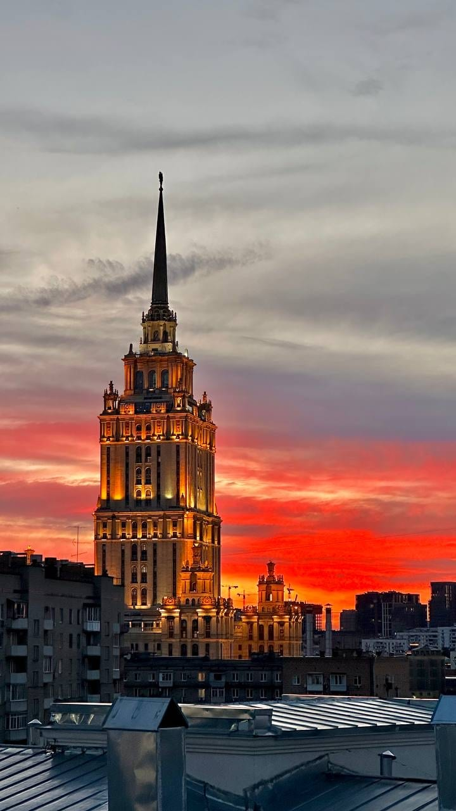
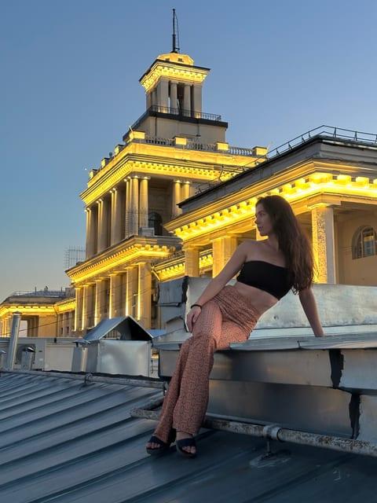
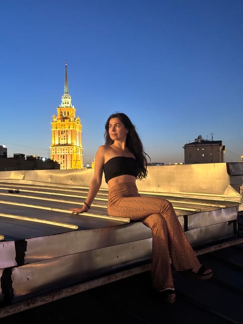
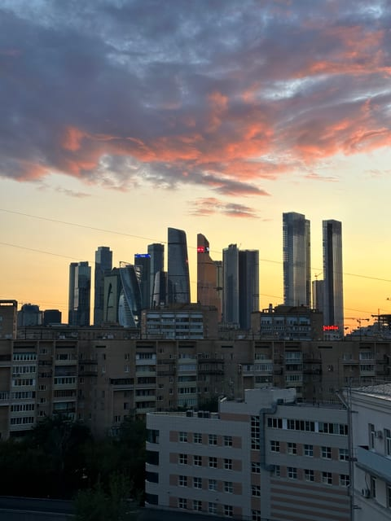

Скатная крыша
Крыша «Киевская Скатная»
Наклонная кровля у Киевского вокзала: вечером в кадре одновременно подсвеченная гостиница «Украина», башня вокзала и силуэты Москва-Сити.
Эту крышу мы сейчас не предлагаем — посмотрите другие в каталоге.
Что видно с этой крыши
Главный объект — сталинская высотка гостиницы «Украина». Со скатной крыши она видна целиком, со шпилем, и вечером включает золотую подсветку. На закате высотка оказывается на фоне цветного неба и читается как силуэт с подсвеченными ярусами.
Второй ориентир — башня Киевского вокзала с часами: она стоит ближе и тоже подсвечена, поэтому вечером в кадре получается сразу два светящихся объекта разного масштаба.
Если развернуться, с этой же крыши видны башни Москва-Сити — на закате они уходят в тёмный силуэт на светлой полосе неба над горизонтом.
Когда лучше приходить
Вечер, ближе к закату и в первые полчаса после: именно тогда включается подсветка «Украины» и вокзальной башни, а небо ещё держит цвет. Полностью в темноте кадр теряет фон.
Кому подойдёт
Подойдёт для фотосессии — на скате получаются нестандартные ракурсы, а подсвеченная высотка даёт готовый фон. Хороший вариант, если хочется, чтобы на фотографиях было понятно, что это Москва.
Как попасть
Подняться можно только вместе с сопровождающим: мы встречаемся у дома в назначенное время, поднимаемся и коротко объясняем правила на площадке. Точный адрес и точку встречи присылаем после подтверждения записи — заранее их не публикуем. Что взять с собой: удобную нескользящую обувь и тёплый слой, вечером на высоте прохладнее, чем на улице. Подробнее — в гиде «Как попасть на крышу в Москве».
Фотографии
Кадры с этой крыши
Все снимки сделаны нами на этой локации — они показывают, что реально видно с точки.



FAQ
Вопросы про эту крышу
Какая высотка видна с этой крыши?
Гостиница «Украина» — одна из семи сталинских высоток. Вечером она подсвечена и попадает в кадр целиком, со шпилем.
Что ещё видно, кроме высотки?
Башню Киевского вокзала с часами — она ближе и тоже подсвечена, — а с другой стороны крыши башни Москва-Сити.
Крыша скатная — это безопасно?
Мы поднимаемся вместе и показываем, где можно находиться. Нужна нескользящая обувь и спокойные движения: по скату нельзя бегать и подходить к краю.
Над городом